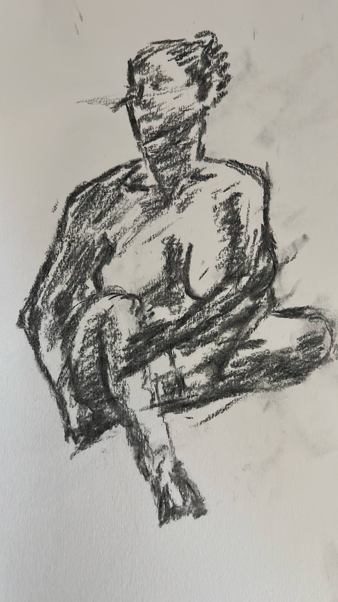
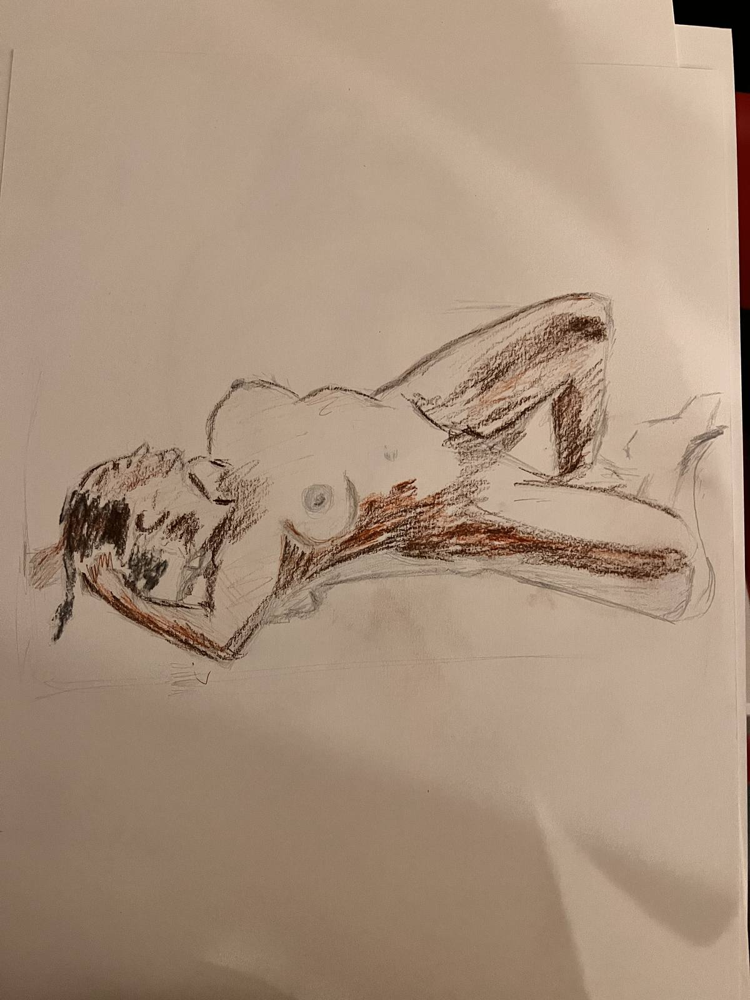
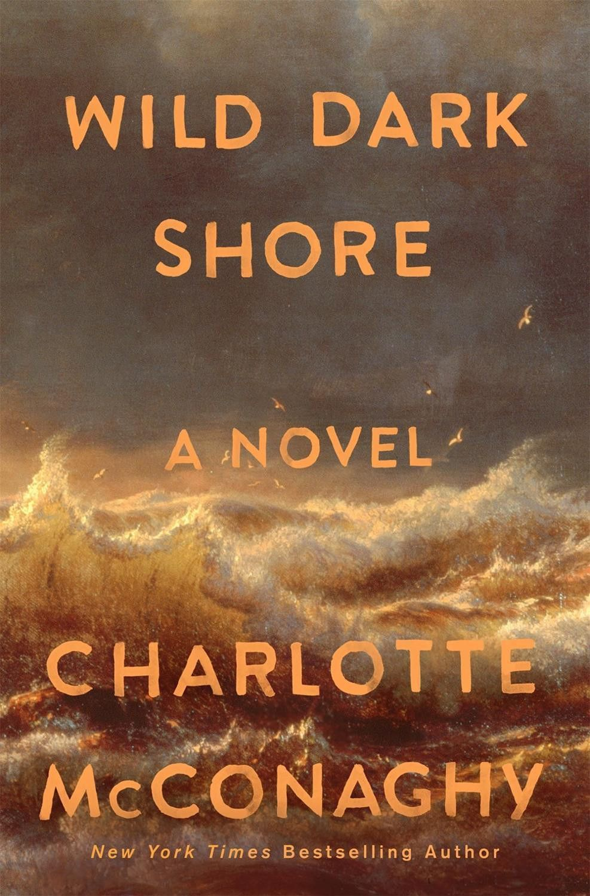

And the sea followed me everywhere I went. Where I lived - less than 500m from the actual beach. Close enough to taste the cool salty breeze every evening at 5pm.
Where I went to school - I would stare out the classroom windows at that narrow strip of blue blurring into the sky.
Every bus I took, everywhere I went. The sea was waiting. Like a patient old friend, waving a glimmering hello.
Growing up in this city, I felt like I knew the sea in my soul. But I didn't know the water in my body. Not fully.
In my conservative hometown, you didn't actually swim. You definitely didn't wear swimming costumes. You just lifted your skirts or rolled your pants up to the knee. And played hide and seek with the waves. Running back and forth to get just your feet, ankles and maybe shins wet.
The waves are too strong. The elders would warn us incessantly. Too strong to swim in unless you were one of the fisherfolk who lived nearby.
Didn't stop my father from throwing me into the waves on a full moon night, when he had suddenly remembered his fathering duties and brought us to the beach for a family evening out. Whatever lesson he hoped I'd learn was lost on me. All I remembered was spinning round and round in the waves. Not knowing up from down. Feeling like a lost sock in a particularly vicious washing machine.
I guess I did learn one lesson. The waves are definitely too strong. So I went back to knowing the sea with my eyes, my heart, and sometimes my running feet.
It would be another 20 odd years, far away in another sea, that I learned what you did with waves that were too strong.
You dove into them. Seems simple and a bit crazy. The first time I heard this I thought I was being pranked. But it didn't look that way because everyone else on this Mediterranean beach was doing it.
When it was my turn, I dove straight into the next wave and I was astonished. That wave was strong enough to knock me down and then some but when I dove in - it was just water. No resistance. All the fury and force were on the other side. The side I had been insisting on staying in because I was afraid. A logical fear - If the waves were so strong close to the shore wouldn't they be stronger the deeper I went? And maybe true depending on the beach you were in or even what the sea was like that day.
But most of the time, in most beaches, they were manageable waves. I had just been on the wrong side.
My relationship with my creative practice is a lot like this. Every time I return to writing, drawing, sewing - pretty much anything creative, my fear is palpable. Sitting heavy on my shoulders and breathing its sulphuric breath down my neck. I don't think this fear is going anywhere. Every time I think I've found ways to cope with it, it returns like another too strong wave.
But. And this is an important But. It's only scary if you're on the wrong side. Dive in. The water is lovely.
I've had a horrendous migraine and POTS flare for the last 3 weeks. So naturally I decided to paint one of the rooms in the flat the minute I felt 20% better. Is there a word for this? Maybe Revenge Hyperactivity? To make up for all the time I feel I have lost.
Anyway in a sign of slightly higher maturity, I decided to pace myself and go really slow. One wall at a time. So the room is coming together. And my shoulder isn't coming apart. Win win.


drew these at a live drawing session. Got to test some of what I've learned in my art classes. Also a reminder of how far there is to go

Reading a mystery novel where a woman washes up on a remote island where only 4 other humans live - a father and 3 kids - caretakers of a doomsday seed vault. Who is she? What is she hiding? What are they hiding?
It's really well written and sharply observed. The character work is really strong and the setting really comes alive in the writing. Can't wait to see how the mystery unfolds.
If my health holds up, resume art class. Get a Zone 2 run in. Start to figure out when and how I return to work